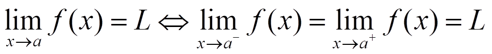

El límite de una función f cuando x tiende a c es L si f(x) se acerca tanto a L como deseemos aproximando lo suficiente x a c:
O:
Por ejemplo:
porque:

No siempre se encuentra el mismo límite si nos acercamos por los dos lados, esto es por lo que definimos los límites laterales:
– El límite de una función f cuando x se acerca a a por la izquierda es L- si f(x) se puede acercar tanto a L- como queramos aproximando lo suficiente x a a desde abajo:
– El límite de una función f cuando x se acerca a a por la derecha es L+ si f(x) se puede acercar tanto a L+ como queramos aproximando lo suficiente x a a desde arriba:

Entonces, la función tiene límite en a si y solo si los límites laterales existen y son iguales:

En el ejemplo
Otras definiciones:
NOTA: Recuerda que cuando
tenemos una asíntota vertical
Ejercicio. Calcula el límite cuando x tiende a 0 y 2, si:
Soluciones